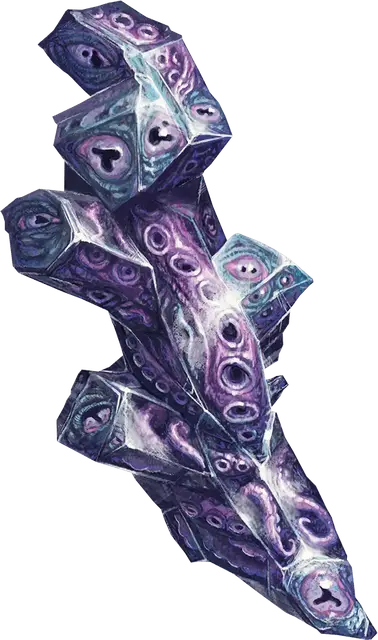

Осколок Дальнего Предела
Far Realm Shard
Чудесный предмет, редкий (требуется настройка чародеем)

Рекомендованная стоимость 501-5000 зм
Этот извивающийся кристалл пропитан искажённой сущностью Дальнего Предела. Действием вы можете прикрепить осколок к Крошечному предмету (например, оружию или ювелирному изделию) или отсоединить его. Он отпадает самостоятельно, если ваша настройка на него заканчивается. Вы можете использовать осколок в качестве заклинательной фокусировки, пока несёте или носите его.
Пока вы несёте или носите осколок, и когда вы используете метамагию на заклинание, вы можете заставить скользкое щупальце прорвать ткань реальности и ударить одно существо, которые вы можете видеть в пределах 30 футов. Существо должно преуспеть в спасброске Харизмы против Сл ваших заклинаний, иначе получит 3к6 урона психической энергией и станет испуганным вами до начала вашего следующего хода.